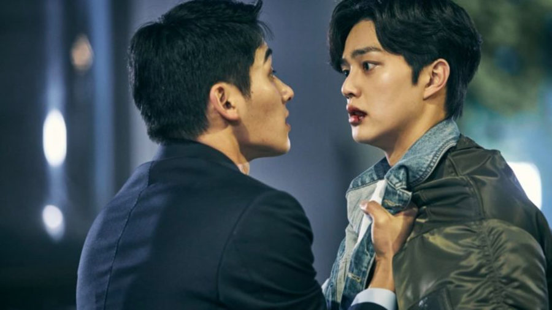
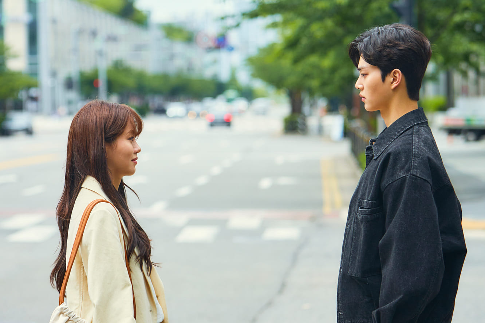
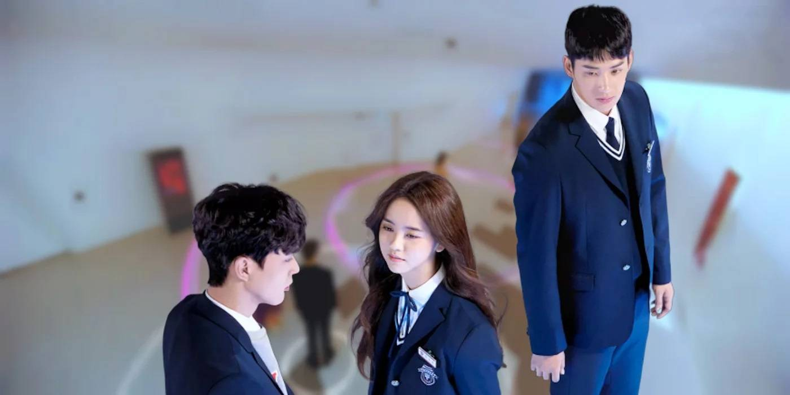

Capitulos Temporada 1
- El relámpago antes del trueno
A diferencia de sus amigas, Kim Jojo tiene cosas más importantes que hacer que andar saliendo con chicos. De regreso de EE. UU., Hwang Sun-oh va a ver a Lee Hye-yeong
- Nadie puede hacer nada si te gusta alguien
Para obligarlo a confesar sus sentimientos por Jojo, Sun-oh le cuenta a Hye-yeong lo que hizo. Jang ll-sik enfrenta golpes a Sun-oh, y Hye-yeong sale en su defensa.
- El milagro de dos personas que se gustan
Jojo acusa a Sun-oh de haber filtrado las fotos. Ahora, toda la escuela sabe del beso. Jang-go se enoja con Jojo por haberle mentido y le rinde cuentas a ll-sik
- Me encanta saber que alguien está de mi lado
Sun-oh y Jojo experimentan el romance mientras Hye-yeong oculta sus sentimientos. Park Gul-mi humilla a su prima, y ll-sik le rompe el corazón a Jang-go
- La gravedad de que te guste alguien
Jojo habla sobre sus padres con Sun-oh y, luego, sugiere hacer algo que deja al joven gratamente sorprendido. Más tarde, Jojo obliga a Jang-go a que se sincere con ella.
- Tu corazón está a salvo
Se difunde la noticia sobre una terrible tragedia. Hye-yeong se acerca a Jojo en la biblioteca y le dice que planea conquistarla a la antigua, sin alarmas de por medio.
- Quiero contarte un secreto
Jojo hiere los sentimientos de Sun-ho, pero él se niega a darse por vencido. Luego, intenta rechazar la compañia de Hye-yeong, pero él la lleva a un lugar especial.
- El uno es el número más grande del mundo
Jojo reflexiona sobre lo que significa el romance y se da cuenta de que quizás llegó el momento de deshacerse del escudo. Sun-oh necesita saber qué siente Jojo por él.


